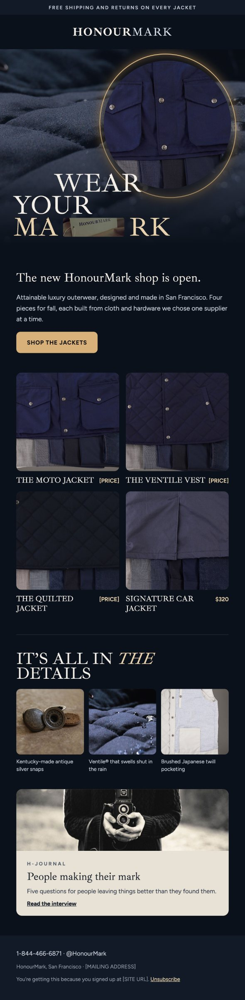

One team, one package: site, store and launch
ProcessWith a focus on the brand’s story, the site connects the luxury to emotion, the store makes buying easy, and the campaign connects people to the brand with the same story beats.
-
01
Website design
A dark, editorial site built around the collection, the cloth and the hardware, with a story from a page in a journal.
-
02
Shopify store
Four jackets with color variants, product detail views, a size guide, a cart drawer and checkout.
-
03
Marketing & social
A launch campaign in three phases, with feed and story ads, display banners, an Instagram grid and email.
Website design
The site opens on the collection film, then moves from the jackets to the details that justify the price: Ventile® cloth, Japanese twill pocketing, Kentucky snaps and California nappa.
Midnight navy, bone and brass, with a serif display face, keep it quiet and expensive-looking. Our Story traces each material back to where it comes from, and the H-Journal gives the brand something to publish between drops.
StrategyShow the craft before the price. Someone who understands the cloth and the quality understands the price point.
Open the site ↗Shopify store
Four pieces, each with color options and a detail gallery: the Car Coat, the Moto Jacket, the Quilted Jacket and the Vest.
I set up the catalog, variants and collections in Shopify, and designed the cart drawer, size guide and search to match the site. Free shipping and returns show up in the header, the cart and the footer, so the promise is always in view.
StrategyShopify keeps a small label's operations simple. Inventory, orders, returns and email live in one place, and the design stays custom.
-
{{ p.name }} {{ p.meta }}
- {{ f }}
Marketing & social campaign
"Made for the Weather" launches the collection in three phases: the film for reach, the details for consideration, and the journal for community.
StrategyEvery ad uses a line from the site, and every click lands on the page that finishes the thought, so the campaign builds on the story, and it feels connected when you land on the story.
-
{{ ph.n }} · {{ ph.goal }}
{{ ph.t }}
{{ ph.d }}
{{ ph.ch }}
Paid social · feed 4:5
Stories & Reels · 9:16
Instagram grid · launch week
Organic. Product, detail and type posts alternate so the grid reads as one story from the profile page.
Email · H-Journal
Phase 03 · Community. Monthly send to newsletter sign-ups from the site footer.
Display · 300×250 and 728×90
Phase 02 · Retargeting. Google Display for visitors who left without buying.
Fall launch
Wear your mark
Every HonourMark piece carries a mark: the hang tag, the stamped antique silver snaps, and the wear you put into it. The campaign sells craft you can see and a jacket you keep, in the same dark, cinematic language as the new site.
StrategyPaid and organic social carry the story. Display and email close the sale.
- {{ b.k }}
- {{ b.v }}
- {{ b.d }}
Four messages
- {{ m.t }} {{ m.d }}
Flight plan
- {{ w.wk }}{{ w.t }} {{ w.d }}
Feed posts · 4:5
{{ a.t }} {{ a.d }}
Carousel · Where it comes from
Weeks 4–5 · Proof. One jacket, five places: Japan, United Kingdom, Kentucky, California and San Francisco. Scroll sideways.
Stories · 9:16
{{ a.t }} {{ a.d }}
Pinterest · 2:3
{{ a.t }} {{ a.d }}
Link ad · 1.91:1
Display · 300×250 and 728×90
Week 6 on · Convert. Retargeted to site visitors, leading with free shipping and returns.
Launch email

Weeks 2–3 · Launch. The new shop is open, sent to the list. Scroll inside to read.
Outcome
A small label with a store that looks like the product: a site, a Shopify setup and a campaign built on the same words, colors and photography.
- Website
- Tells the story of the cloth and hardware, with a journal for ongoing content.
- Store
- Catalog, variants, cart and checkout on Shopify, run by the team without a developer.
- Campaign
- Ready-to-run ads for feed, stories, display and email, all pointing to the right page.
- Measure
- Conversion rate, return on ad spend, newsletter sign-ups and repeat customers.
Selling a product online?
I can design your site, set up your Shopify store and launch it with a campaign that uses the same story everywhere.
Services on this project
- Website design
- Shopify setup
- Marketing campaign
- Social & paid ads